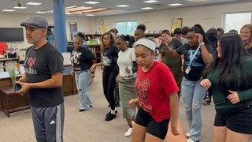
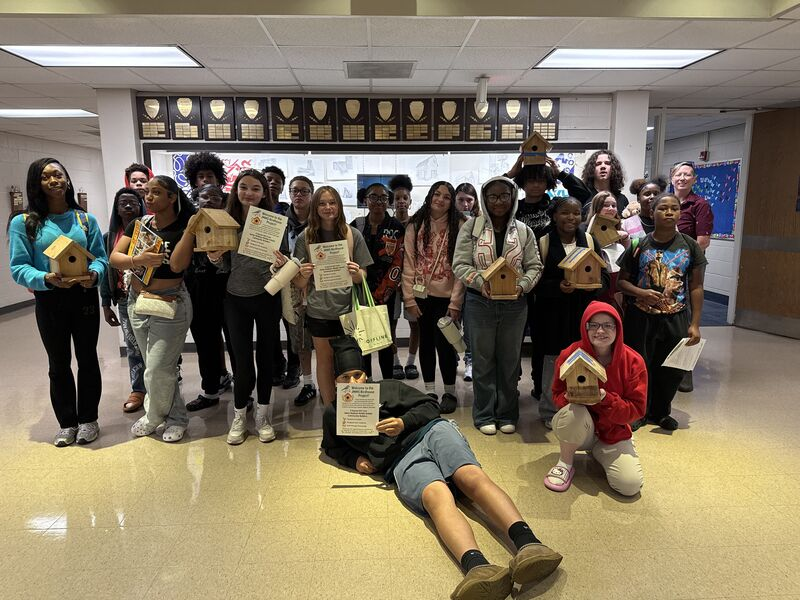
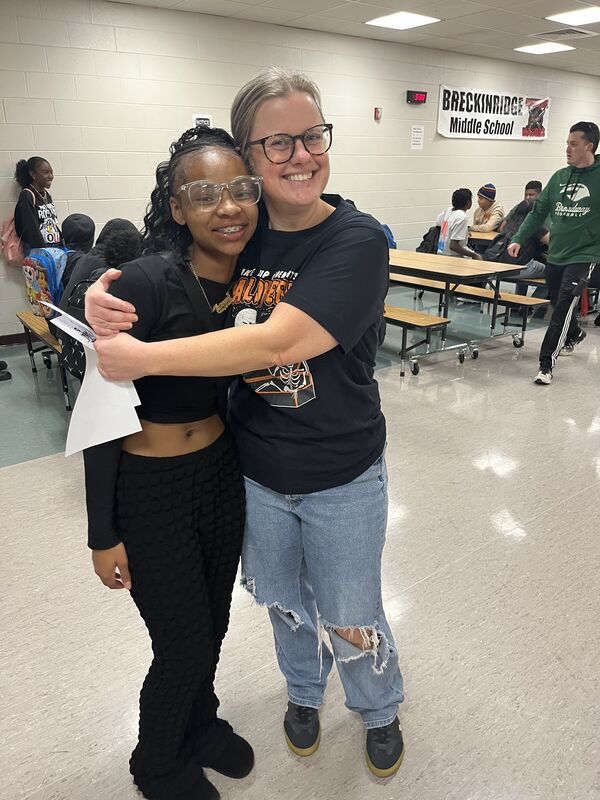
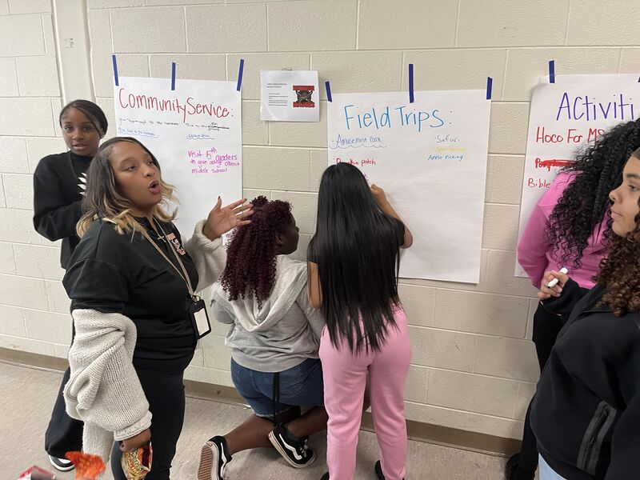

Branch: Family and Community Engagement | Treatment: School-Level | Cohort: Community Builders
Roanoke City's Community Builders program identified a need to move critical data points at the city's five middle schools. The program is working toward a reduction in chronic absenteeism, suspension days, and report card failures, alongside a reduction in juvenile gun violence incidents across the city. The division hired dedicated staff at each school and built year-round programming designed to reach beyond the school building through partnerships with community organizations — career conferences at local universities, cultural celebrations with local partners, and civic events where students present alongside city leadership.
The program's reach is already visible, from the 21 community partnerships established across the city to former participants returning as high school mentors. City leadership has taken notice. The mayor and school board members have spent evenings in the schools, but rather than their typical guest capacity, they spent an evening at Lucy Addison Middle sitting across from students over a game of Jenga.
"Innovations such as mentoring networks, family engagement events, and partnerships with local agencies have expanded access to mental health, career exploration, and enrichment opportunities. Early outcome data reflect reduced absenteeism, fewer suspensions, improved academic performance, and a marked decline in juvenile-involved gun violence, underscoring the program's growing impact on student well-being and community safety."
— Joshua Johnson, Youth Development and Intervention Coordinator
WDBJ7 News Segment
WDBJ7 covered the Community Builders program in a March 2025 segment, reporting on how the program is building pathways for Roanoke City eighth graders. The segment includes student voices from Starr Walker and Andrew Hairston on college visits, career exploration, and hands-on trade experiences at DAYTEC, and staff perspectives from Morgan Hill and D'Sean Adams on the program's daily work with students.
Roanoke Times Article
The Roanoke Times profiled the Community Builders program in January 2025, reporting on its outcomes in reducing absenteeism and academic failures across the city's five middle schools. The article is one of two print features the program has received alongside its local television coverage.
Read the Roanoke Times article
Roanoke City exemplifies VCSI 5.2: Acknowledge Progress and Efforts. The program prioritizes public recognition that acknowledges the efforts of Community Builders, fostering a sense of pride and community.

For Hispanic Heritage Month, a Salsa Noke guest speaker shared Latin culture and taught traditional dances with students. At Hollins University, the "Ignite Your Purpose" Conference brought young women into college classrooms for workshops on health, careers, and art.
"I think after today I want to go to college now."
— Woodrow Wilson Student

The Fuel Your Future Conference took students to Virginia Tech Carilion School of Medicine for a boys' empowerment day covering science, health, entrepreneurship, and team-building.


James Madison's Community Builders programming covered career exploration, creative work, and physical activity in a single semester. Students built and decorated birdhouses and Star City Cycling ran the bike rodeo on the school parking lot, teaching bike safety and riding skills.

Latinas Network, an organization that empowers Roanoke-area entrepreneurs and businesses, visited John Fishwick for a classroom session. Approximately 20 students sat together with "Welcome to Community" displayed on the smartboard behind them.
"The reason I keep coming back because Ms. McIntyre wants me to."
— John Fishwick Student

A former James Breckinridge student returned as a high school mentor, embracing staff in the cafeteria. The Community Builders program brings former participants back each year to mentor the next group of eighth graders.


Students led their own planning session to brainstorming ideas for future Community Builder acts of service, field trips, and other activities. Students and summer site leaders presented to the Roanoke City Schools school board on the work of Community Builders program.


The "Generations in Play" event at Lucy Addison brought together students, family members, and community leaders. School board members and Mayor Joe Cobb joined together with students for an evening of games and dinner.